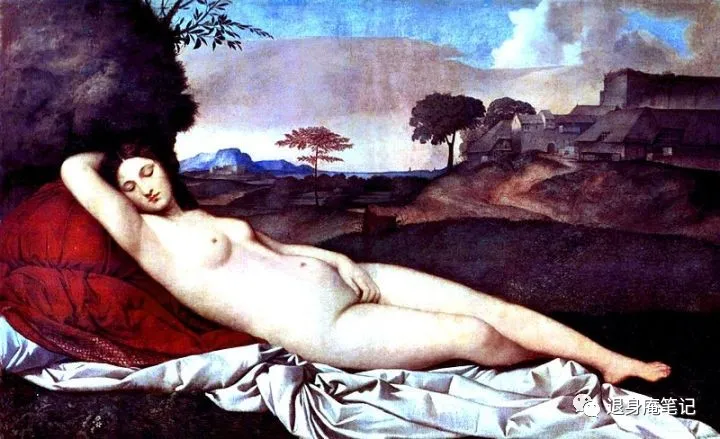

公众号取名叫“退身庵笔记”，功能介绍写的是“时无道，正经人也写日记”。为何退身？何以退身？既然退身，为什么又写笔记？问题太多，不是一句话能解释的，所以才有这篇发刊词。
一 . 马扩
北宋宣和七年（公元1125）的冬天，完颜宗翰的军帐里，北宋使臣马扩看着眼前一整桌特意准备珍馐美味，却毫无胃口。他是来替宋徽宗道歉的，宋徽宗去年招降了联宋叛金的平州守将张觉，今年又还想继续履行之前的和约，让金国把应州和蔚州也还给宋朝。
所有人都知道宋徽宗是在做白日梦，马扩此行最成功的结果也不过是通过这个问题试探出金国在攻宋问题上的态度和虚实罢了，但马扩没想到的是金国连对南侵的意图加以掩饰的意思都没有，甚至还提出，是时候该让宋朝反过来割地赔偿金国了。
这个答案是情理之中，实际上也在马扩的意料之中，只是他之前不愿想，也不愿信。他从宣和二年开始随父出使，到宣和七年这次出使时，他早已对北方诸国的军事、政治和经济实力了若指掌，他几年前就曾担忧过，"但愿我大宋莫要和这些国家开战"，可现在，这个担忧眼看着要变成事实。
现在，完颜宗翰特意给马扩准备了这一桌丰盛的酒菜，但在桌上特别地提醒了一句："这是我们最后一次把酒言欢，以后大家就是敌人了，大家在战场上见吧！"
之后果真在战场上见了，马扩后来在真定府募兵抗金，被真定府路安抚使刘韐诬陷通敌下了大狱，金人破城的时候马扩逃了出来，但又被金人抓了。完颜宗望后来要赐给他高官厚禄，他拒绝了，只要一块土地养活家人，但他拿着土地开了酒馆，暗中联络周边的义军，成为了最早的北宋抗金地下交通站站长。再后来马扩凭借这个酒馆，混进了五马山的义军，又搞出了接近十万人的部队，但好容易回到扬州，见到宋徽宗，立刻被夺了军权。当然，也没完全夺，只是把部队都换成了老弱残兵罢了。
马扩抗了半辈子金，在前线辗转多国，到家是这个待遇，实在也没有办法了。等到秦桧拜相，就彻底把他罢了官，踢出了政治中心。
枪是拿不动了，但马扩一点没有颓丧，他紧跟着就拿起了笔。马扩回乡以后的几十年里，写了一部笔记，就是今天研究宋代北方少数民族政权和北宋外交都绕不开的那本书——《茅斋自叙》。
正经人不是不写日记的，至少在北宋，文人是很有写笔记的习惯的，从郑文宝的《江南余载》到欧阳修的《归田录》，都是笔记。其实不是至少，而应该说偏偏是北宋，偏偏是全中国历史上，可能直到今天为止，读书人所得待遇最高、道德自觉最好而士大夫尊严最强的宋朝，只有在那个时代，才能发展出笔记文的风气。
我每次读《茅斋自叙》，都不由得感慨，那得是多热爱生活，且多心胸开阔的人才能写得出来的。一个人在历史的大潮里，在血染的沙场上，刚刚被碾成沙土了，可他丝毫没觉得自己的一生就是微不足道的，反而能把自己十几年的点点滴滴都回味一遍，然后写成书留给后人去看，去评论。我猜，他压根没想过后人的评论，他只是要让我们看看。
我写笔记，也没想过评论。
二 . 时无道
"古之仕者，国有道则尽忠以辅之，国无道则退身以避之。"
——《孔子家语》
现代社会没有比透明更崇高的词了，18世纪卢梭反对戏剧，倡导完全的"敞开心扉"的时候，就已经预告了某种经济和政治范式的转变，这种转变促使所有的事物褪去否定性，顺滑地被压扁、抹平，毫不抵抗的融入资本、交际与信息的顺流之中，让事物变成透明的。（韩炳哲语）
出于各类监管的目的，政治组织的最高价值是透明，经济活动的最高价值是透明，乃至人际交往的最高价值也是透明。在普遍的期待中，透明意味着公开、没有黑幕和谎言，坦诚而高效。
但事实是，透明是暴力的，一个人的自由，如果不包含不理解另一个人的权利，或者不包含不被另一个人理解的权利，都是不充分的。理查德·桑内特认为"自主不是一种基于理解的、透明的平等，而是指人们接受他人身上他所不理解的部分。"但这在现代社会是做不到的——距离感、羞耻心没法进入资本的循环，因此，人们便以"透明"的名义，消除了所有谨慎的回旋余地。它们被照得通亮，被剥夺殆尽，世界也因此变得更加无耻、更加赤裸。（韩炳哲语）
透明还是淫荡的，个体融入社会的唯一方式是变得透明，个体变得透明的唯一方式是分享，是无条件的"敞开心扉"，是小红书、是知乎和微博。但这种分享以展示为唯一目的，这和商品的展示一样，商品要获得购买，互联网上的分享要获得点赞。对分享的最高回应是"我喜欢"，每个分享的人都是商品。这就是为什么同样是身躯，《沉睡的维纳斯》只有崇高，而健身房的肌肉男永远淫荡——维纳斯绝不是在向谁展示什么，那有损她的尊严。
透明还是虚无的，因为透明的世界里，一切都是确定的，一切都是可预期的，一切都是可计算的，一切都是可控制的。在这样的世界里，人失去了神秘感，失去了想象力，失去了创造力，失去了自由。
透明的最终目的是渴求确定性，一切的伤害和风险都该剔除，最好的交易方式是量化，经济学研究不能离开计量，谈恋爱的最佳方式的量表打分排序，一切试图为爱情而做的，可能受伤害的尝试都是可笑的恋爱脑——明天不过是一个等待优化的今天。
很常见的例子是，好小学的意义是好初中，好初中的意义是好高中，进而是好大学和好工作，然后是好的配偶、家庭和孩子，后面是孩子的好小学。今天的意义被建立在明天上，而明天的意义还没有着落，性和繁衍是任何动物的本能行为，现代人反感婚育绝不是人类发生了突变，而仅仅是因为，在透明的指导思想的前提下，人类没有办法反抗现实的虚无，只能把子弹打向无辜的婚育本身。
但人能放弃透明吗，出于经济效益的考虑，人只怕不能，我自己玩数字货币、区块链、NFT等等和web3.0相关的一切，而区块链恰恰是要让一切都透明的技术，比特币那条长长的公链上，创世区块里镌刻着下面这句话。
"The Times 03/Jan/2009 Chancellor on brink of second bailout forbanks."
"2009年1月3日，财政大臣正处于实施第二轮银行紧急援助的边缘。
区块链要追求的就是那个完全透明，以至于不是没有，而是不需要信任的社会。我一边听到、看到的是无数人对区块链的追捧，一边感受到的是现代社会对人透明性的要求让我自己越来越难以忍受，我只好迷茫，只好感慨一句时无道，这个道不是道可道的那个道，而是未来。
三 . 我会写什么
区块链学习笔记、读书摘抄及感想、辩论笔记和其他不知道归到什么分类的随笔，目前就这四类，但想来我也不会再有什么其他可写的了
四 . 我绝不会写什么
首先是绝不碰时事，连举例也不会。党媒是一定要姓党的，但自媒恐怕不能姓自，至于姓什么，我的意见是可以没有姓氏。
其次是绝不碰性别议题，类似的种族议题或者其他什么议题也算，在我看来讨论这些纯属废话，而且是会惹麻烦的废话。总有些人喜欢说这些不是废话，不讨论不发声就不会有改变，问题是讨论和发声能出好结果，但前提是知识储备、基本逻辑和坦诚态度，但这些牵涉政治权利的议题百分百没有这三个条件。现实生活里能做点事就做点事，我懒得在网上说这种废话。
最后是绝不碰个人情绪，我没准备把公众号当树洞，更何况有情绪的时候我也写不出来东西。